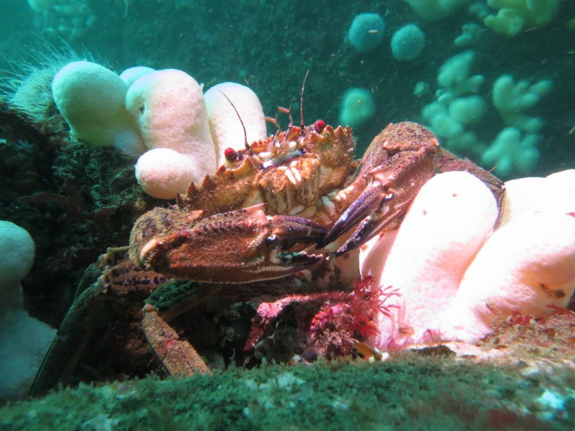
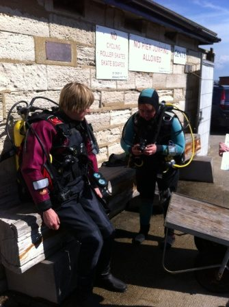
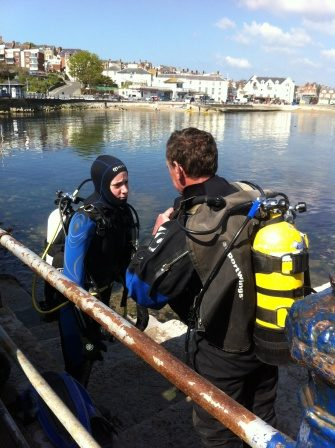

Swanage

18th - 19th May 2013
After a long winter, we knew the water would still be quite chilly but we were all excited nonetheless for the first opportunity this season for most of us to 'get wet'. It was also the first trip for newly qualified Ocean Diver Phil.
We travelled down to Swanage on the Friday evening and made our way - in part via the pub - to the caravan park and tried to get at least some sleep before a very early start the next day.
Day 1: Saturday 18 May
There were two separate morning dives. The early risers had a tide to catch at 0725 and had to persuade the kit hire shop on the pier to open early! The weather was clear and surprisingly calm, certainly in comparison to a similar trip last year. We took the Mary Jo a short distance to the shotline for the Fleur de Lys. As well as the wreck, which lies at around 14m, a fair number of fish were to be seen including dogfish and wrasse.

The lazier morning group enjoyed a relaxed time under the pier, a good opportunity to test out kit after the winter and get our "diving legs".
In the afternoon we took the Mary Jo out to Peveril Ledge for an exciting drift dive at 18 - 22m. The current was pulling fairly strongly, so we deployed buddy lines and SMBs at the start of the dive, before everyone rapidly got pulled in separate directions. A great whiste-stop tour of the Ledge, with lots of local sea weed, starfish, dogfish, wrasse, and even a huge ray.
Day 2: Saturday 19 May
A slightly later start on Sunday saw us rested...after another evening in the pub! We started with a fairly shallow and gentle drift dive, to just 8-10m on the Tanvil Ledge and saw more wrasse and dogfish. The second dive on Sunday was the by far the most special. We travelled out further in the bay and descended to 15-20m over the mussel beds for a very fast drift dive! The current was strong and so most pairs used buddy lines. The vis was not bad at all and there were again a number of fish to be seen. For some of the more recently qualified divers, there were comments such as 'the first dive where I really felt like I was diving' and for the veterans (!) it was also an enjoyable dive. Charlie & Trevor even saw a cormorant swooping down to 6m as they did their safety stop! So overall a great weekend. A couple of achy ears with dives therefore wisely aborted and a little bit of rain towards the end, but also lots of sunshine, smiles and an aching to get back in the water again soon!
Massive thank-you to Gareth and Emily for organising the trip!
